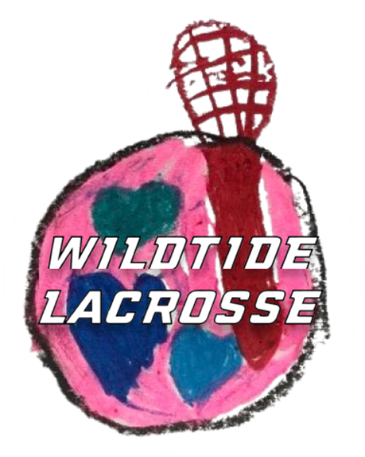
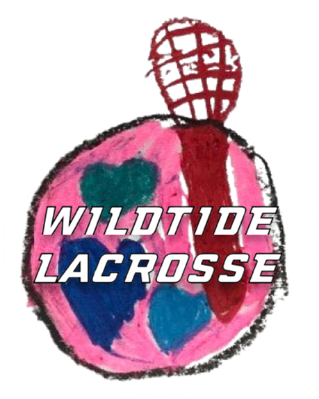

HOME
ABOUT
CONNECT
SPONSOR

HOME
ABOUT
CONNECT
SPONSOR


WildTide is committed to the growth of lacrosse in Brunswick County, NC.
Register for Girls Developmental
Register for Boys Developmental
GIRLS DEVELOPMENTAL PROGRAM
(K-4th grade)
Spring/Summer Season
April 28th - June 9th
Practice Times
Sundays 3pm - 4pm
LOCATION
West Brunswick High School
MH Rourk Stadium Turf Field
Shallotte, NC
ABOUT
Beginner introduction to lacrosse
Players must have a mouth guard
Sticks and Goggles Provided
Director of Girls Program
“Coach Rebecca” (Rebecca Allen)
“Lacrosse is a part of the world. I love lacrosse because of the friends I have made and I just love playing lacrosse.”
- Rosi, Kindergarten
For the best and safest experience for your growing athlete, players need to have a mouthguard, cleats, goggles, and stick at all practice sessions.
WildTide provides goggles and sticks for players who need to use them until they are able to purchase their own. This is one of the ways our organization is making lacrosse more accessible and inclusive to our community.
Fundraising and sponsorships can help with costs, please reach out for more information.
“Recycling Lacrosse”
WildTide Girls imagined a way for current players to help younger players, for past players to still be involved, and for new players to have the opportunity to be mentored by a part of the WildTide family - Recycling Lacrosse is what we call it. One part of this ideology is our Developmental Program.
The developmental program was designed to give young ladies from Kindergarten through Fourth Grade an introduction to the greatest sport ever!
The program is guided by Coach Rebecca and lead by a few of our High School players. The idea is for our High School ladies to have the opportunity to develop their communication and leadership skills before they head off to college and the professional world.
Players are taught lacrosse fundamentals and basic skills in fun, engaging ways to help them develop a love for the game.
This is a great way to see if your player loves this sport and wishes to progress and grow with us in our amazing program.
Players can enter as a developmental player and their journey could take them to the Middle School team, the High School Team, and College Opportunities... did you know that WildTide Girls has never had a Senior who has only had one College/University to choose from!? Each year all of our Senior players receive offers from different schools, giving them the opportunity to choose the right setting and program for them. Not all of our seniors actually choose to play in college, many go on to pursue academics only and we are just as proud of them as we are of the ones who continue their lacrosse career, in addition to furthering their academic achievements.
Some players have even come back to help coach!